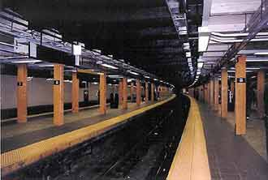

死亡
带着生命的咒语游戏
表达着不可表达的表达
死亡和你我无关
爱的瞬间
生命的碎片
不可分解的幻想幻想着终极
生命
表达着不可表达的含义
终极的花朵没有种子
种子和花朵无关
然而无关与无关却有了太多的相关
生命的咒语 游戏着死亡
死亡 生命大粪上的那群蚊子
蚊子般的文字在大粪上逐臭
花朵 幻想的种子
终极的凋谢不是花朵的前提
生命与死亡无关
死亡的游戏带来生命的咒语
爱的瞬间 无关的相关
追逐着文字和蚊子
不可表达表达的已经太多
生命的游戏继续
每一瞬间
花朵成为花朵
种子带来种子
包括死亡
以及一切与死亡无关或相关的故事
地铁
尸体 一车车
沿着肠壁蠕动
城市的地平线上
尸体烟雾般聚散
沙丁鱼罐头
充斥各种气味
各种的姿势
死一般喧闹
地底的墓穴
取食的器具 敲打
永远的 黎明
谎言 没有匕首
黑夜被谋杀
猩红的黎明
封闭大地的眼
蠕动 喧闹
取食的尸体
地狱太挤
天堂塌陷
黎明的谎言
谋杀黑夜
匕首猩红
血的气味
死的墓穴
沙丁鱼保持
各种姿势
烟
雾
散
去
夜 黑 依 旧
坟墓
带上坟墓 走向
四季和北极
走向月球和洪水 以及
可知不可知的存在
真理
从来都是笑话
笑话中的存在
以真理为食
太阳 手上滚动
拭去黑夜 为了
所谓的光明 鲜血
染红岁月 历史
变换颜色 而
味道 总是一样
坟墓也总是一样
无论半圆还是三角
里面的馅
很少不同
历史的街道上
真理的包子继续叫卖
叫卖的一茬茬成了馅
前赴后继
一个不落
真理是超越死亡的
坟墓抗议着
眼神狡诈